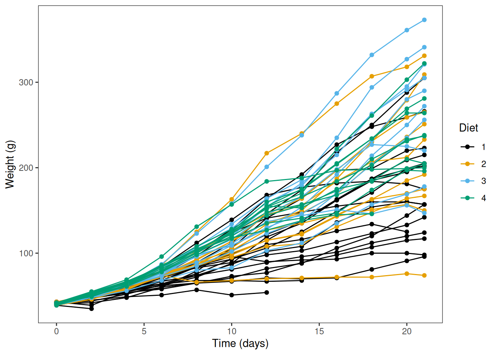

A t-test is a statistical test that helps us decide whether the mean of a dataset differs more than we’d expect by chance, either from a fixed value, or from the mean of another dataset.
It’s one of the most common inferential tools in biology used e.g. for comparing trait values between species or treatments.
In biology, we often ask: “Do two treatments produce different responses?”
Recall that the method was first developed by Guinness statistician William Sealy Gosset (under the pen name “Student”), which he used to, e.g. compare barley yields, assess yeast performance, or test quality differences between malts.
The ChickWeight dataset 🐥
To look at t-tests, we’ll use the ChickWeight dataset, which records body weight of chicks fed one of four novel diets. Weight was measured over 21 days.
A research question we might be interested in is: “Do chicks fed different diets gain different amounts of weight?”
# Convert it to a tidyverse tibbleChickWeight <-as_tibble(ChickWeight)ChickWeight
Chick – chick ID (each chick was measured repeatedly)
Diet – diet group (1–4)
Visualisation
Let’s take a quick look at the data. Each line represents measurements of the same chick made over time.
ggplot(ChickWeight,aes(Time, weight, colour = Diet, group = Chick)) +geom_line() +geom_point() +labs(y ="Weight (g)", x ="Time (days)") +scale_color_colorblind() +theme_bw() +theme(panel.grid =element_blank())

The family of t-tests
There are three main types:
One-sample t-test
Compare a sample mean to a known or hypothesised value.
Two-sample t-test
Compare means between two independent groups (e.g. Diet 1 vs Diet 2).
Paired t-test
Compare means from matched or repeated measures (e.g. same chick before vs after).
One-sample t-test
A one-sample t-test compares a dataset against a given defined mean value.
Let’s say that chicks reared on an industry-standard diet typically weigh 175 g after 21 days. We want to know, “Do chicks fed a novel diet have an average weight that differs from 175 g?”
You’ll notice that R outputs several numbers related to the t-test:
One Sample t-test
data: Day21$weight
t = 4.0983, df = 44, p-value = 0.0001761
alternative hypothesis: true mean is not equal to 175
95 percent confidence interval:
197.2048 240.1730
sample estimates:
mean of x
218.6889
t — test statistic (difference relative to spread)
df — degrees of freedom
p-value — probability of the difference if H₀ is true
95% CI — plausible range for the true mean
mean of x — the mean() of the input data.
If p < 0.05, we reject the null hypothesis evidence that mean ≠ 175 g.
We would report this result as: “Average day 21 weight of chicks fed a novel diet differed significantly from the industry-standard of 175 g (\(t_{44}=4.1\), \(p = 0.00018\)).”
NoneWhat are degrees of freedom?
Degrees of freedom (df) describe how many independent values in a calculation are free to vary once certain constraints (like estimated parameters) are applied.
They determine how much independent information is available to estimate a parameter such as a mean or variance, and they influence the shape of reference distributions (e.g. t, F, χ²).
Formal definition:\[ df = \text{number of observations} - \text{number of estimated parameters} \]
Why it matters:
Correct df ensure accurate p-values and confidence intervals.
Fewer df mean more information is used by the model, resulting in greater uncertainty.
Example: If you have 5 data points and estimate a mean (1 parameter), you have 4 df left to estimate variance. That’s not much information, your estimate of spread will be noisy and highly affected by random variation.
But with 100 data points, estimating one mean leaves 99 df, a much more reliable basis for inference.
Two-sample t-test: equal variances
A two-sample t-test compares the means of two independent groups. Here, we’ll ask “Does the weight of chicks on Diet 2 differ from Diet 4 at Day 21?”
The classic version, Student’s t-test, assumes that the variance within each group is the same:
# Filter `ChickWeight` to include Day 21 data where Diet is either 2 or 4:Day21_Diet2_4 <- Day21 |>filter(Diet ==2| Diet ==4)# Student's two-sample t-test (equal variances)t.test(weight ~ Diet, data = Day21_Diet2_4, var.equal =TRUE)
Two Sample t-test
data: weight by Diet
t = -0.80922, df = 17, p-value = 0.4296
alternative hypothesis: true difference in means between group 2 and group 4 is not equal to 0
95 percent confidence interval:
-86.05260 38.34149
sample estimates:
mean in group 2 mean in group 4
214.7000 238.5556
The average weight of chicks on Diet 2 does not differ from Diet 4 (t17 = − 0.81, p = 0.43).
Two-sample t-test: unequal variances
Often in biology, however, we cannot assume that both groups have equal variance. For instance, chick weight might diverge more as they grow (e.g., a high-protein diet vs restricted diet).
Welch’s t-test allows for unequal variances, and is robust than Student’s original form. It is also the default t-test in R (i.e. var.equal = FALSE is the default)
“Does the weight of chicks on Diet 2 differ from Diet 4 at Day 21?”
# Welch's two-sample t-test (unequal variances)# Note var.equal has the default value FALSE, no need to specify itt.test(weight ~ Diet, data = Day21_Diet2_4)
Welch Two Sample t-test
data: weight by Diet
t = -0.83341, df = 14.323, p-value = 0.4183
alternative hypothesis: true difference in means between group 2 and group 4 is not equal to 0
95 percent confidence interval:
-85.11833 37.40722
sample estimates:
mean in group 2 mean in group 4
214.7000 238.5556
Compare the output to Student’s t-test shown previously for the same data. Here, the df is smaller (and non-integer), and the p-value is slightly smaller, but in this instance both tests gave the same qualitative conclusion: no difference in weights.
NoneWhy Welch’s t-test has smaller and non-integer degrees of freedom
Welch’s test doesn’t assume equal variances. Instead of using a fixed df like (n_1+n_2-2), it uses the Welch–Satterthwaite approximation, which depends on the sample variances and sample sizes of the two groups. That’s why the reported df can be non-integer.
\(s_1^2, s_2^2\) are the sample variances, and \(n_1, n_2\) are the sample sizes.
When variances and sample sizes are similar, this \(df\) is close to \(n_1 + n_2 - 2\). When they differ, the \(df\) adjusts (often smaller), giving more accurate Type I error control.
Paired t-test
We can treat the same chick’s weight before and after as a pair: “Has weight changed between Day 18 and Day 21 for chicks on Diet 1?
Paired <- ChickWeight |>filter(Diet ==1, Time ==18| Time ==21) |>pivot_wider(names_from = Time, values_from = weight, names_prefix ="Day_")# Each row is a single chick weighed on two Dayshead(Paired)
We can then give both Day_18 and Day_21 as columns to t.test(), with the additional argument paired = TRUE. This is a paired test because each entry in Day_18 corresponds to an entry from Day_21 from the same chick.
Paired t-test
data: Paired$Day_18 and Paired$Day_21
t = -4.2091, df = 15, p-value = 0.0007588
alternative hypothesis: true mean difference is not equal to 0
95 percent confidence interval:
-25.98526 -8.51474
sample estimates:
mean difference
-17.25
One-tailed vs two-tailed tests
We introduced the concept of one-tailed and two-tailed tests in the previous session. Here’s how you can specify a directional test in R:
“Has weight increased between Day 18 and Day 21 for chicks on Diet 1?”
t.test(Paired$Day_21, Paired$Day_18, paired =TRUE, alternative ="greater")
Paired t-test
data: Paired$Day_21 and Paired$Day_18
t = 4.2091, df = 15, p-value = 0.0003794
alternative hypothesis: true mean difference is greater than 0
95 percent confidence interval:
10.06552 Inf
sample estimates:
mean difference
17.25
“Is chick weight lower for chicks fed Diet 2 than Diet 4”
t.test(weight ~ Diet, data = Day21_Diet2_4, alternative ="less")
Welch Two Sample t-test
data: weight by Diet
t = -0.83341, df = 14.323, p-value = 0.2091
alternative hypothesis: true difference in means between group 2 and group 4 is less than 0
95 percent confidence interval:
-Inf 26.48002
sample estimates:
mean in group 2 mean in group 4
214.7000 238.5556
Checking assumptions
Statistical tests make assumptions about the data. The assumptions should be met (mostly) for the interpretation of the test to be valid.
Independence of observations
Measurements within each group (and across groups, for two-sample tests) are independent; for paired tests, pairs are correctly matched.
Scale of measurement
The response is continuous (interval/ratio) and measured on the same scale across groups.
Approximate normality
For one-sample and two-sample tests: the sampling distribution of the mean (or the data within each group) is roughly normal.
For paired tests: the within-pair differences are roughly normal.
No severe outliers
Outliers can distort means/SDs and invalidate inference.
What is independence?
Observations are independent when the value from one experimental unit (e.g., one chick) tells you nothing about the value from another (e.g. another chick) In other words, errors are uncorrelated across units.
Holds when each measurement comes from a different individual sampled without affecting others.
Violated when there is clustering or repeated measures, e.g. the same chick measured over time, shared cages/plates, siblings, or spatial/temporal autocorrelation
Violations of independence mean observations within a cluster are more similar than across clusters (pseudoreplication).
Assessing normality
A quantile-quantile (Q-Q) plot compares your sample quantiles to the theoretical quantiles from a Normal distribution.
These departures from linearity indicate problems with the normality assumption:
S-shape (ends above the line): heavier tails than Normal.
Concave/convex bow: lighter tails than Normal.
One tail off the line: skewness.
Strong bends/clusters: outliers or mixture of populations.
NB:t-tests are usually robust against minor differences from normality when sample sizes are moderate (\(n\geq 20\) per group), and for two-sample tests, when groups are of similar size.
If points fall roughly on the reference line, the data are approximately normal.
These Q-Q plots show weights roughly follow a normal distribution
Reporting results
In text, e.g. a Results section of a paper, you would report the output of a t-test as follows:
One-sample t-test: Mean chick weight was significantly greater than for previously reported weights of 175 g for the industry standard diet (t44 = 4.10, p = 0.00018), suggesting the novel diets better support chick growth.
Two-sample t-test: Mean chick weight did not differ between diets 2 and 4 (t17 = -0.81, p = 0.43), suggesting neither diet is preferential for supporting chick growth.
Paired t-test: For diet 1, mean chick weight on day 21 was significantly higher than on day 18 (t15 = -4.21, p = 0.00075), suggesting it supports chick growth.
Include both statistical and biological interpretation.
Recap & next steps
The t-test helps us decide whether two means differ more than expected by chance.
It uses sample means, variances, and degrees of freedom to estimate uncertainty.
We assume data are independent, roughly normally distributed, and have similar variance between groups.
The t-distribution, introduced by William Sealy Gosset at Guinness, accounts for the extra uncertainty in small samples.
You now understand the logic behind hypothesis testing and how the t-test applies it. Next, we’ll look at other classical statistical tests.
❓Check your understanding
What is the main purpose of a t-test?
None✅ Answer
To test whether the means of two groups differ more than expected by random variation (sampling error).
You have a tibble called plants with columns height and treatment.
Write the R code to perform a two-sample t-test comparing height between treatments.
None✅ Answer
t.test(height ~ treatment, data = plants)
Still using plants, how would you run a one-sample t-test in R to test whether the average height equals 100?
None✅ Answer
t.test(plants$height, mu =100)
What argument would you add to t.test() if you want to assume equal variances between groups?
None✅ Answer
t.test(height ~ treatment, data = plants, var.equal =TRUE)
Which output values from t.test() tell you whether there is evidence of a difference between groups?
None✅ Answer
Look at the p-value and the 95% confidence interval for the difference in means.
If the p-value is small (e.g. < 0.05) and the confidence interval does not include 0, the difference is statistically significant.